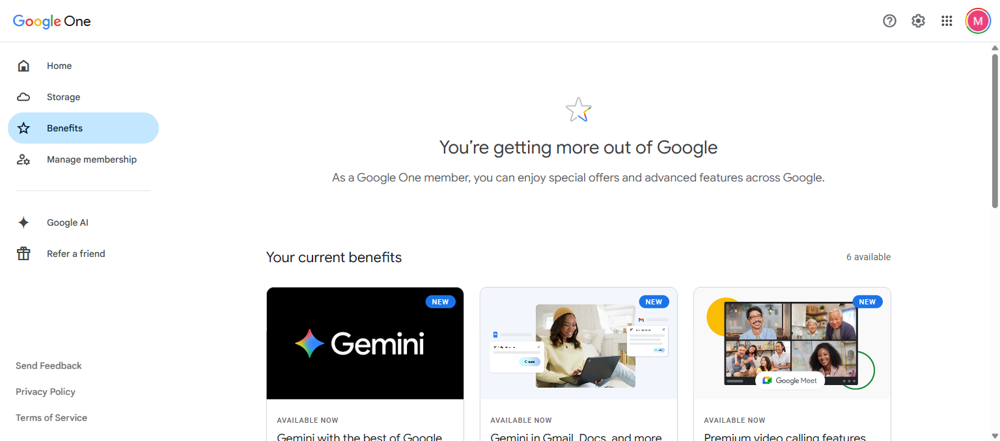

כל השינויים — לפי כלי
לחצו על כלי כדי לראות מה השתנה, עם דוגמאות
Gemini Advanced
Flow + Veo
NotebookLM
Gmail, Docs, Sheets
Gemini Advanced — מה השתנה
מודל חדש: Gemini 3.1 Pro WOW מרץ 2026
עד עכשיו, כשהעלינו מסמך ארוך ל-AI, הוא היה "שוכח" את ההתחלה באמצע. עכשיו Gemini מסוגל להחזיק מיליון טוקנים — בערך 1,500 עמודים — ולענות על שאלות לגבי כל חלק במסמך.
העליתי דוח תקציב של 180 עמודים ושאלתי "מה 3 ההוצאות שגדלו הכי הרבה לעומת שנה שעברה?" — קיבלתי תשובה מדויקת עם הפניות לעמודים הרלוונטיים.
Deep Research — עוזר מחקר שעושה את העבודה בשבילכם WOW
אומרים ל-Gemini "תחקור לי את הנושא הזה" — והוא יוצא לגלוש, קורא עשרות מקורות, ומחזיר דוח מסודר עם ציטוטים. כאילו יש לכם עוזר מחקר שעובד 24/7. עד 20 דוחות ביום.
ביקשתי "תחקור מה השיטות העדכניות להוראה מבוססת פרויקטים" — תוך 3 דקות קיבלתי דוח עם 12 מקורות, מחולק יפה לנושאים. חסך לי שעה וחצי של חיפושים.
Deep Think — כשצריך תשובה רצינית חדש
מצב שגורם ל-Gemini לקחת כמה שניות נוספות לחשוב לפני שהוא עונה. נשמע פשוט, אבל ההבדל מורגש — תשובות מדויקות יותר לשאלות מורכבות, חישובים, וניתוח לוגי.
Gems — יוצרים עוזר שמכיר אתכם
אפשר ליצור "עוזר" עם הוראות שנשמרות. נגיד: "את מורה למתמטיקה, תסבירי תמיד בפשטות עם דוגמאות מהחיים". בפעם הבאה שפותחים אותו — הוא כבר יודע מה הסגנון. כמו GPTs של ChatGPT.
Gemini Live — פשוט לדבר איתו
אפשר לדבר עם Gemini בקול, ממש כמו שיחת טלפון. שואלים משהו, מקבלים תשובה מדוברת, ממשיכים לשאול. מושלם לנסיעה, להכנת שיעור תוך כדי הליכה, או כשפשוט עדיף לדבר מאשר להקליד.
Flow + Veo — סטודיו וידאו AI
סרטון מטקסט — עם שמע שמסתנכרן לשפתיים WOW
זה הדבר שהכי הדהים אותי. כותבים משפט — ומקבלים סרטון של 8 שניות עם דיאלוג שמסתנכרן לתנועת השפתיים, מוזיקת רקע ואפקטי סאונד. הכל נוצר אוטומטית, בלי עריכה.
כתבתי "מורה מסבירה ליד לוח בכיתה צבעונית, תלמידים מרימים ידיים" — קיבלתי סרטון עם תנועה טבעית, רעשי כיתה, ואנרגיה של שיעור אמיתי. ב-8 שניות.
Timeline Editor — סוף סוף אפשר לערוך בתוך Flow חדש
עד עכשיו היה קשה לחבר כמה קליפים יחד. עכשיו יש עורך ציר זמן ישירות ב-Flow — מחברים קליפים, חותכים, מוסיפים מעברים, ומייצאים בפורמט אנכי לרילס או רחב ל-YouTube. בלי תוכנה חיצונית.
יצירת תמונות — חינם ובלי הגבלה
בתוך Flow יש גם מחולל תמונות שעובד בלי קרדיטים. כותבים מה רוצים לראות → מקבלים תמונה. טוב לפוסטים, למצגות, או בתור נקודת פתיחה לסרטון.
Whisk נסגר — הכל עובר ל-Flow עד 30.4
Whisk, כלי נפרד של גוגל ליצירת תמונות, נסגר בסוף אפריל. כל מה שהוא ידע לעשות עובר לתוך Flow. רגע טוב להכיר את Flow אם עוד לא נכנסתם.
NotebookLM — הכלי שהפתיע את כולם
Audio Overviews — פודקאסט מכל מסמך WOW
זה עדיין מפיל לי את הלסת. מעלים PDF, מצגת, מאמר — ו-NotebookLM יוצר שיחה בין שני "מגישים" שמסבירים את התוכן כאילו זה פודקאסט אמיתי. אפשר לבחור אורך. 20 ביום (בחינמי רק 3).
העליתי 3 פרקים מספר היסטוריה. קיבלתי פודקאסט של 12 דקות — שני מגישים דנים בחומר, שואלים אחד את השני שאלות, נותנים דוגמאות. כאילו מישהו ישב והכין את זה במיוחד.
Video Overviews — עכשיו גם סרטון, לא רק אודיו חדש במרץ
חדש לגמרי: NotebookLM יכול עכשיו ליצור גם סרטון סיכום מהמסמכים שלכם. עם אנימציות ומעברים. מעלים חומר, מקבלים סרטון מוכן.
אינפוגרפיקה בלחיצה — 10 סגנונות חדש
מעלים מסמך, לוחצים כפתור, ומקבלים אינפוגרפיקה מוכנה. 10 סגנונות לבחירה — סקיצה ידנית, חלוקה גיאומטרית מסודרת, סגנון מדעי, ועוד. דרך נהדרת לסכם חומר בדף אחד.
שאלונים שזוכרים איפה עצרתם
NotebookLM מייצר שאלון אוטומטי מהחומר שהעליתם. מה שחדש: ההתקדמות נשמרת. אפשר לסמן "ידעתי" או "צריך לחזור", לערבב, ולחזור מאוחר יותר בדיוק מאיפה שעצרתם.
300 מקורות + עכשיו גם ספרים דיגיטליים חדש
אפשר להעלות עד 300 מסמכים לכל notebook (בחינמי רק 50). PDF, Docs, Slides, Sheets, סרטוני YouTube, קבצי שמע, ועכשיו גם ספרים בפורמט EPUB.
Gemini בתוך Gmail, Docs ו-Sheets
Gmail — שואלים שאלות על המיילים שלכם WOW
במקום לחפש ידנית בתיבת המייל, פשוט שואלים: "מתי התקבל האישור מרונית?", "מה סוכם בנושא התקציב?". Gemini עובר על המיילים ומחזיר תשובה. בנוסף: סיכום אוטומטי של שרשורים ארוכים, עזרה בכתיבה, והגהה.
שאלתי "מה ההחלטות העיקריות מהפגישה עם ההנהלה השבוע?" — Gemini עבר על 14 מיילים ונתן סיכום עם 4 נקודות ברורות. בלי שפתחתי מייל אחד.
Docs — משפט אחד הופך למסמך שלם WOW מרץ 2026
הדבר הכי חדש וגם הכי מרשים: Gemini יודע עכשיו למשוך מידע מהמיילים שלכם, מ-Drive ומ-Chat, וליצור מסמך מלא. משפט אחד → מסמך מעוצב עם תוכן ממקורות שונים.
כתבתי ב-Docs: "כתבי מכתב להורים על הטיול, על סמך המייל מהנהלת בית הספר" — Gemini מצא את המייל, שלף את כל הפרטים, ובנה מכתב מוכן. לא הייתי צריכה לפתוח את Gmail בכלל.
Sheets — אומרים מה צריכים, Gemini כותב את הנוסחה
"תחשב ממוצע של העמודה השלישית לפי חודשים" — וזהו. Gemini כותב את הנוסחה. יש גם "Fill with Gemini" — ממלא עמודות שלמות אוטומטית. נגיד: עמודת שמות מוצרים → עמודת תיאורים שנוצרת לבד.
Google Vids — אווטאר שמדבר בשמכם חדש
כותבים תסריט, בוחרים דמות — והיא מדברת את הטקסט עם תנועת שפתיים טבעית. תומך ב-8 שפות. מצוין לסרטוני הדרכה, הסברים קצרים, או פתיחות לפגישות.

Pro לעומת Ultra — מה ההבדל?
גוגל מציעה גם מדרג Ultra. הנה ההבדלים העיקריים:
| Pro | Ultra | |
|---|---|---|
| Gemini — שאלות/יום | 100 | 500 |
| Deep Think | בסיסי | מלא |
| Flow — סרטונים/חודש | ~50 | ~1,250 |
| Flow — איכות וידאו | Fast | Fast + Quality |
| NotebookLM Audio/יום | 20 | 200 |
| Workspace | מלא | מלא |
| אחסון | 5TB | 30TB |
| YouTube Premium | --- | כלול |

שורה תחתונה
מה שהתחיל כ"בדיקה מה השתנה באחסון" הפך לגילוי של כלים שלא הכרתי. Flow שינה לי את הדרך שבה אני יוצרת תוכן ויזואלי. Deep Research חוסך לי שעות של חיפוש. ו-"שאלו את התיבה" ב-Gmail — פשוט הגיוני, ולא מובן למה זה לא היה קיים קודם.
רוב הכלים האלה קיימים גם בגרסה החינמית, אבל עם מגבלות הרבה יותר צרות. שווה להיכנס ולנסות — גם בלי לשלם.